Back to Question Bank
Presentation Narrator Index
แยก narrator เป็นรายสไลด์ตามไฟล์ `Slide1.JPG` ถึง `Slide15.JPG` เพื่อให้ browse ง่าย แก้ง่าย และเห็นสถานะของแต่ละหน้าชัดเจน
Open markdown index
P1
สไลด์แกนหลักที่คุมภาพรวมและ tone ของทั้งชุด
P2
สไลด์กลไกหรือเครื่องยนต์ที่ช่วยอธิบายวิธีทำจริง
P3
สไลด์รองหรือหน้ารับคำถาม/พักจังหวะ
Slide List
1 slide = 1 .md + 1 .html โดยใช้ชื่อไฟล์ตาม slide image จริง
P1ผ่านแล้ว
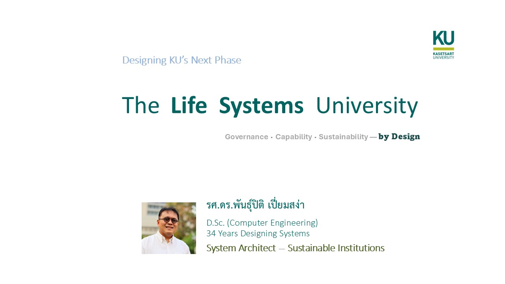
Slide 1 — Title / Framing
Designing the Next Phase of KU
Open editable note
P1ผ่านแล้ว
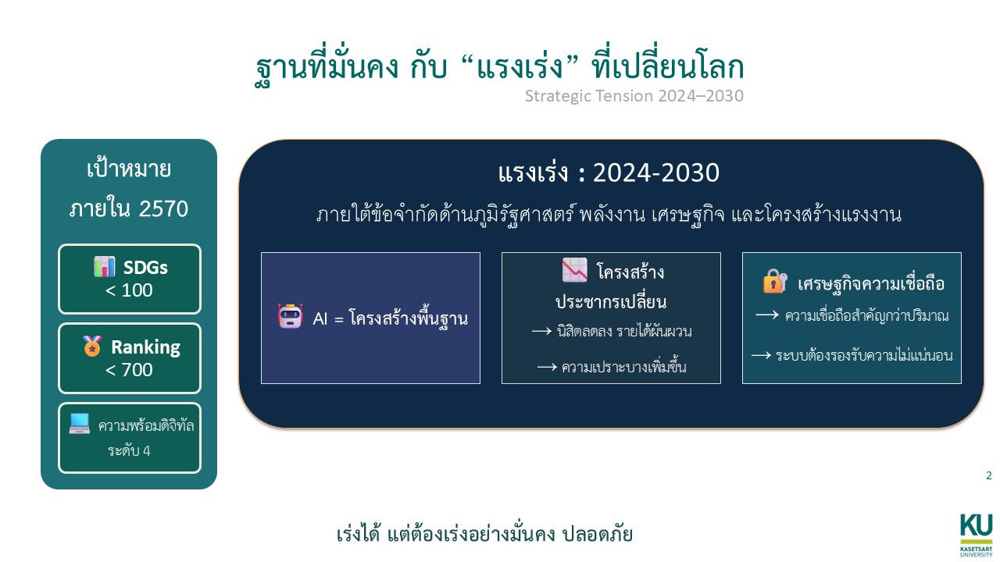
Slide 2 — Strategic Tension
ฐานที่มั่นคง กับ “แรงเร่ง” ที่เปลี่ยนโลก
Open editable note
P1ผ่านแล้ว
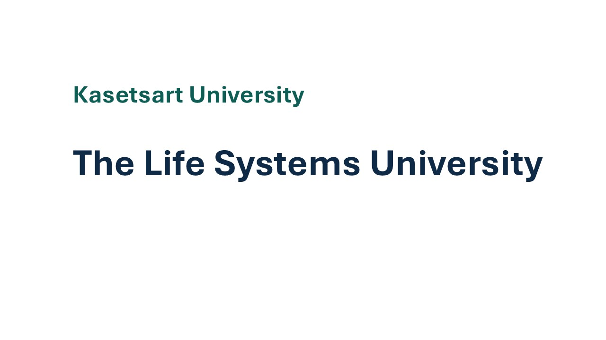
Slide 3 — Identity Statement
Kasetsart University
Open editable note
P1ผ่านแล้ว
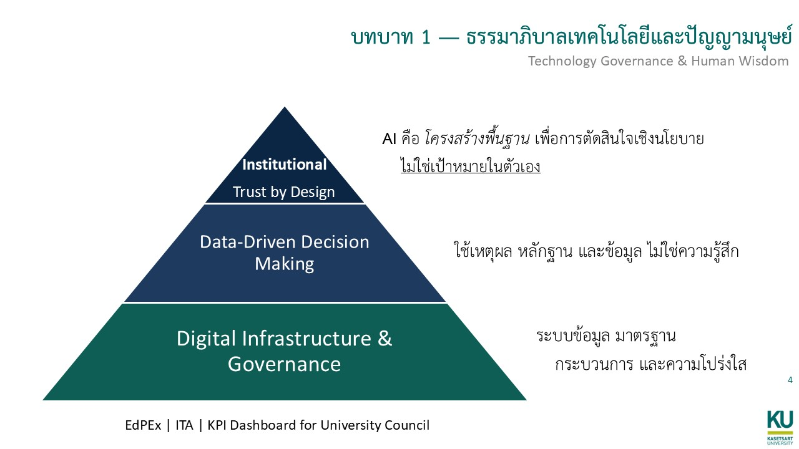
Slide 4 — Technology Governance
บทบาท 1 — ธรรมาภิบาลเทคโนโลยีและปัญญามนุษย์
Open editable note
P2ผ่านแล้ว
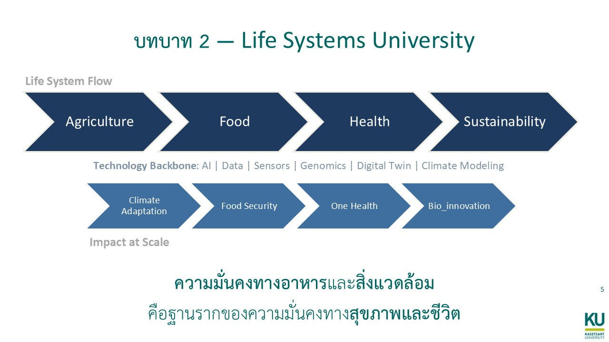
Slide 5 — Life Systems
บทบาท 2 — Life Systems University
Open editable note
P1ผ่านแล้ว
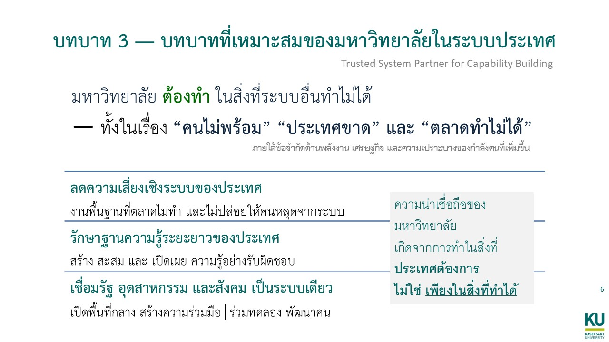
Slide 6 — National Role
บทบาท 3 — บทบาทที่เหมาะสมของมหาวิทยาลัยในระบบประเทศ
Open editable note
P1ผ่านแล้ว
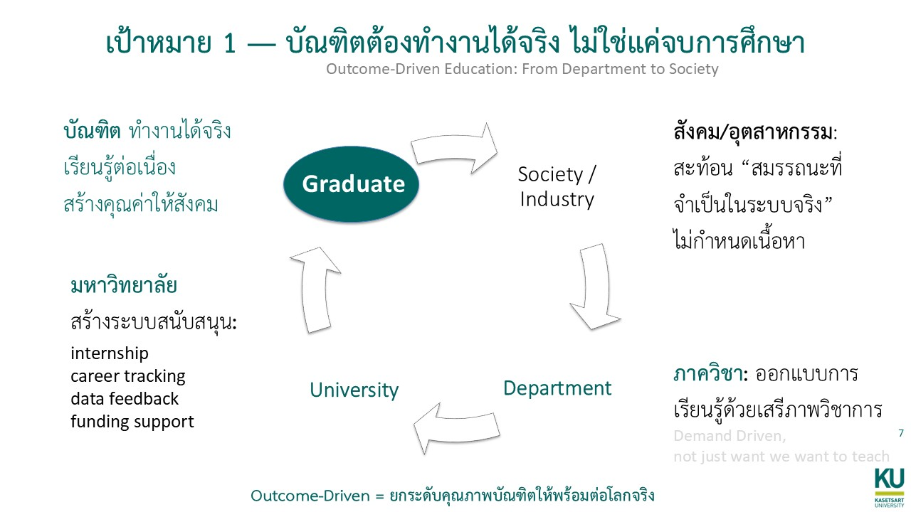
Slide 7 — Outcome-Driven Education
เป้าหมาย 1 — บัณฑิตต้องทำงานได้จริง ไม่ใช่แค่จบการศึกษา
Open editable note
P1ผ่านแล้ว
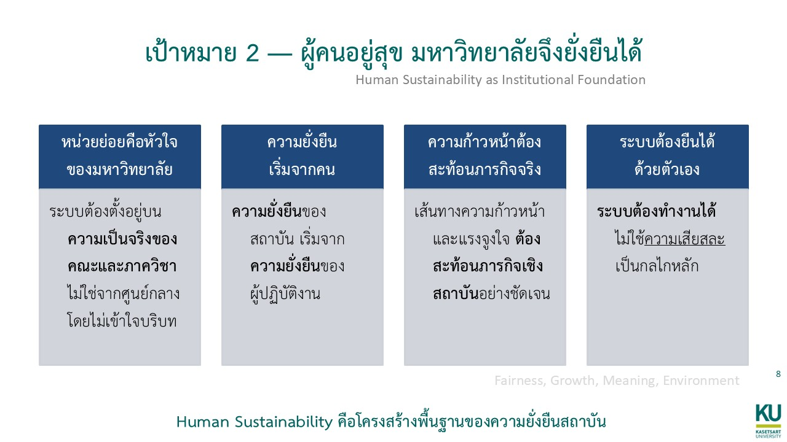
Slide 8 — Human Sustainability
เป้าหมาย 2 — ผู้คนอยู่สุข มหาวิทยาลัยจึงยั่งยืนได้
Open editable note
P1ผ่านแล้ว

Slide 9 — Trust by Design
เป้าหมาย 3 — ระบบที่ดี ไม่ต้องพึ่งคนดีเป็นพิเศษ
Open editable note
P2ผ่านแล้ว
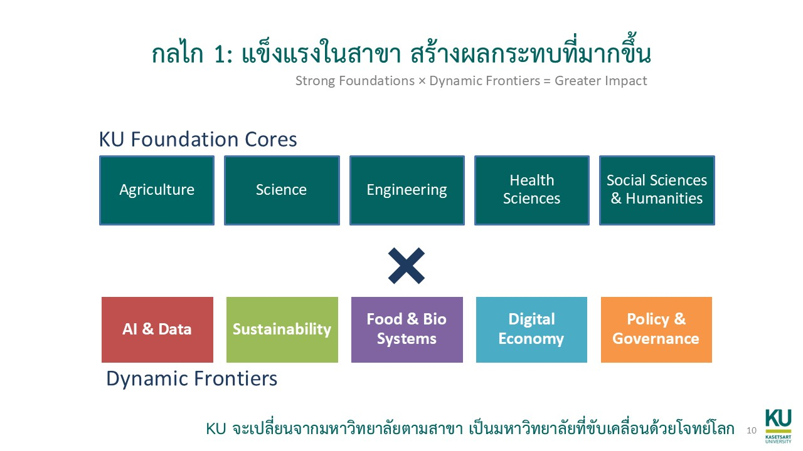
Slide 10 — Academic Engine
กลไก 1: แข็งแรงในสาขา สร้างผลกระทบที่มากขึ้น
Open editable note
P1ผ่านแล้ว
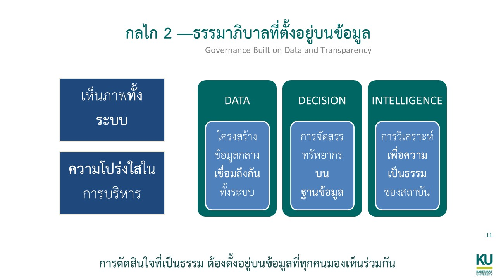
Slide 11 — Digital Governance
กลไก 2 — ธรรมาภิบาลที่ตั้งอยู่บนข้อมูล
Open editable note
P1ผ่านแล้ว
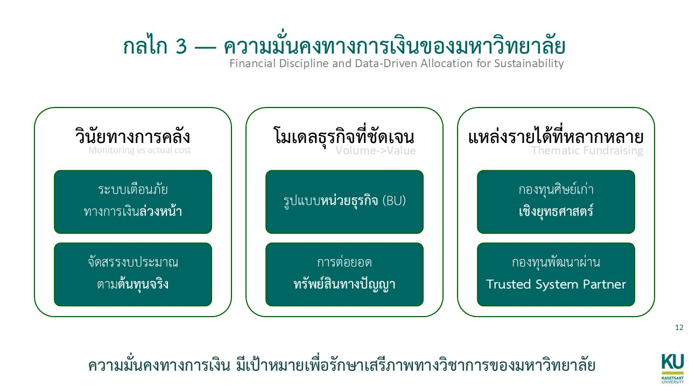
Slide 12 — Financial Sustainability
กลไก 3 — ความมั่นคงทางการเงินของมหาวิทยาลัย
Open editable note
P1ผ่านแล้ว
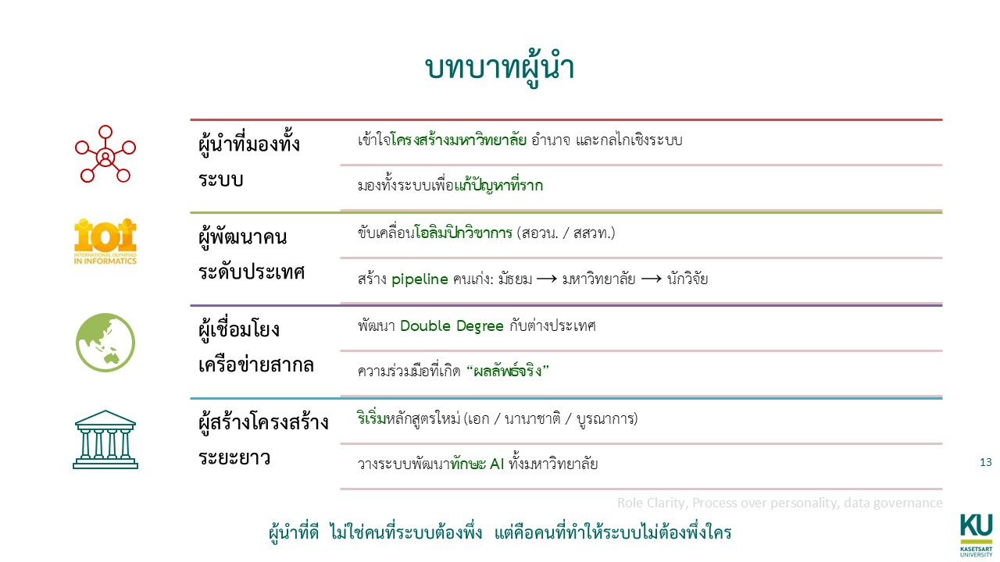
Slide 13 — Leadership Positioning
บทบาทผู้นำ
Open editable note
P1ผ่านแล้ว
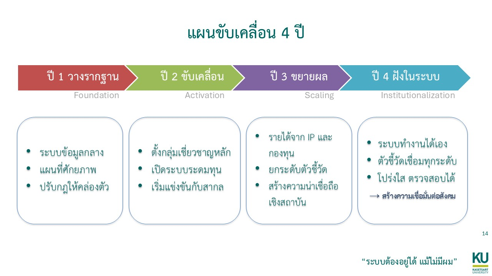
Slide 14 — 4-Year Execution Map
แผนขับเคลื่อน 4 ปี
Open editable note
P1ผ่านแล้ว
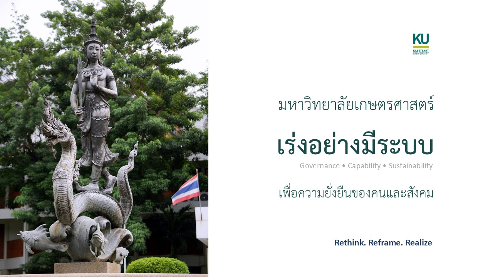
Slide 15 — Closing
มหาวิทยาลัยเกษตรศาสตร์
Open editable note